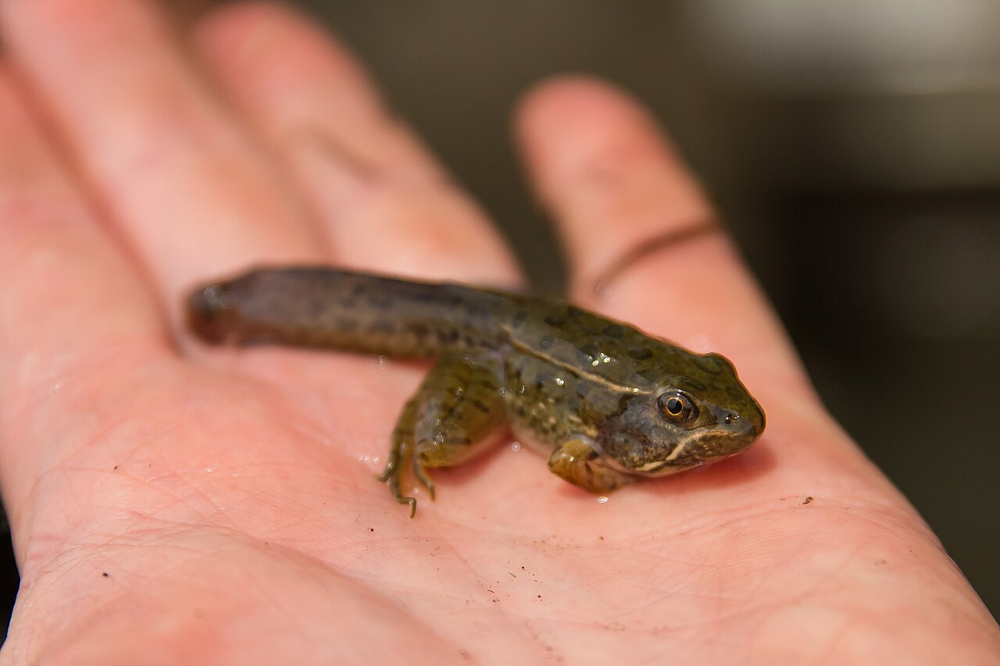

细胞的衰老和死亡
本期导读
分清个体衰老与细胞衰老，掌握衰老细胞的特征与两种衰老学说，比较细胞凋亡与细胞坏死，并了解细胞自噬。
衰老特征 · 两种学说 · 凋亡 · 坏死 · 自噬

视频原话 · 导读3 句
- 同学们好！这节课梳理人教版必修一第六章第三节——细胞的衰老和死亡，也是必修一的最后一节。9.4s
- 高考常考衰老细胞的特征、细胞凋亡与细胞坏死的区别，以及细胞自噬。7.3s
- 我们按六个考点梳理，每个考点都讲清楚怎么考、怎么做。5.5s
个体与细胞衰老01#
单细胞生物：细胞的衰老或死亡就是个体的衰老或死亡。
多细胞生物：个体衰老与细胞衰老不是一回事；但个体衰老的过程，也是组成个体的细胞普遍衰老的过程。
高考怎么考
判断“个体衰老时所有细胞都处于衰老状态”——错误，多细胞生物个体衰老与细胞衰老不同步。
易错点
幼年个体中也有衰老的细胞，老年个体中也有新生的细胞，比如造血干细胞仍在分裂。
解题方法
区分生物类型：单细胞生物细胞衰老即个体衰老；多细胞生物两者不同步，但个体衰老是细胞普遍衰老的过程。
视频原话3 句
- 考点一，个体衰老与细胞衰老的关系。单细胞生物：细胞的衰老或死亡就是个体的衰老或死亡。9.7s
- 多细胞生物：个体衰老与细胞衰老不是一回事；但个体衰老的过程，也是组成个体的细胞普遍衰老的过程。10.1s
- 易错：幼年个体中也有衰老的细胞，老年个体中也有新生的细胞，比如造血干细胞仍在分裂。9.1s
衰老细胞的特征02#
| 特征 | 具体表现 |
|---|---|
| 水分减少 | 细胞萎缩，体积变小，新陈代谢速率减慢 |
| 多种酶的活性降低 | 比如酪氨酸酶活性降低，黑色素合成减少，所以老年人头发变白 |
| 色素积累 | 细胞内的色素逐渐积累，比如老年斑；细胞呼吸速率减慢 |
| 细胞核的体积增大 | 核膜内折，染色质收缩、染色加深；细胞膜通透性改变，物质运输功能降低 |
衰老细胞整体表现为细胞体积变小、代谢减慢，而细胞核的体积反而增大。
高考怎么考
判断“衰老细胞中所有酶的活性都降低”——错误，是多种酶的活性降低，并非所有酶；“衰老细胞的细胞核体积增大”——正确。
易错点
衰老细胞的细胞体积变小，但细胞核体积变大；“白头发”是酶活性降低，“白化病”是基因异常、不能合成酪氨酸酶，别混。
解题方法
把特征分成“水分、酶、色素、细胞核、细胞膜”五类逐项记忆，注意“体积变小而核增大”。
视频原话5 句
- 考点二，衰老细胞的主要特征。细胞内水分减少，细胞萎缩，体积变小，新陈代谢速率减慢。9.5s
- 细胞内多种酶的活性降低，比如酪氨酸酶活性降低，黑色素合成减少，所以老年人头发变白。9.3s
- 细胞内的色素逐渐积累，比如老年斑；细胞呼吸速率减慢。5.8s
- 细胞核的体积增大，核膜内折，染色质收缩、染色加深；细胞膜通透性改变，物质运输功能降低。9.8s
- 易错：衰老细胞的细胞体积变小，但细胞核体积变大；“白头发”是酶活性降低，“白化病”是基因异常、不能合成酪氨酸酶，别混。12.3s
自由基与端粒学说03#
自由基学说：细胞代谢产生的自由基，会攻击和破坏细胞内各种执行正常功能的生物分子。比如攻击磷脂产生更多自由基，攻击DNA可能引起基因突变，攻击蛋白质使其活性下降。
端粒学说：端粒是每条染色体两端的一段特殊序列的DNA—蛋白质复合体，每次细胞分裂后会缩短一截。
高考怎么考
判断某细胞是否具有端粒，或某种现象符合哪种衰老学说。
易错点
两种学说各有侧重：自由基学说强调生物分子受到攻击，端粒学说强调染色体两端的端粒缩短，不要混为一谈。
解题方法
端粒内侧的正常基因受到损伤后，细胞活动逐渐异常；原核细胞没有染色体，也就没有端粒。
视频原话4 句
- 考点三，细胞衰老的原因。自由基学说：细胞代谢产生的自由基，会攻击和破坏细胞内各种执行正常功能的生物分子。11.6s
- 比如攻击磷脂产生更多自由基，攻击DNA可能引起基因突变，攻击蛋白质使其活性下降。9.3s
- 端粒学说：端粒是每条染色体两端的一段特殊序列的DNA—蛋白质复合体，每次细胞分裂后会缩短一截。10.3s
- 解题方法：端粒内侧的正常基因受到损伤后，细胞活动逐渐异常；原核细胞没有染色体，也就没有端粒。9.9s
细胞凋亡04#
细胞凋亡是由基因所决定的细胞自动结束生命的过程，也常被称为细胞编程性死亡。
| 内容 | 要点 |
|---|---|
| 实例 | 蝌蚪尾的消失、人胚胎发育中手指间细胞的凋亡、被病原体感染的细胞的清除 |
| 意义 | 保证多细胞生物体完成正常发育，维持内部环境的稳定，抵御外界各种因素的干扰 |
高考怎么考
判断“细胞凋亡对生物体是不利的”——错误，细胞凋亡对生物体是有利的；“被病原体感染的细胞的清除属于细胞凋亡”——正确。
易错点
细胞凋亡对生物体是有利的；被病原体感染的细胞的清除属于凋亡，不是坏死。
解题方法
答凋亡要抓住“基因决定、自动结束生命”，意义抓住“正常发育、内部环境稳定、抵御干扰”。
视频原话4 句
- 考点四，细胞凋亡。由基因所决定的细胞自动结束生命的过程，也常被称为细胞编程性死亡。9.5s
- 实例：蝌蚪尾的消失、人胚胎发育中手指间细胞的凋亡、被病原体感染的细胞的清除。8.4s
- 意义：保证多细胞生物体完成正常发育，维持内部环境的稳定，抵御外界各种因素的干扰。8.9s
- 易错：细胞凋亡对生物体是有利的；被病原体感染的细胞的清除属于凋亡，不是坏死。8.4s
凋亡与坏死的比较05#
| 比较项目 | 细胞凋亡 | 细胞坏死 |
|---|---|---|
| 性质 | 基因控制的主动死亡 | 被动的 |
| 原因 | 自然的、程序性的 | 在种种不利因素的影响下，由于细胞正常代谢活动受损或中断引起的细胞损伤和死亡 |
| 对机体 | 有利 | 有害 |
两者的根本区别在于是否由基因控制：凋亡是基因控制的主动死亡，坏死是外界不利因素造成的被动损伤。
高考怎么考
判断某个实例属于凋亡还是坏死。
易错点
凋亡是主动的、对机体有利，坏死是被动的、对机体有害，判断时不能只看“细胞死亡”这一结果。
解题方法
看原因——自然的、程序性的是凋亡；由极端物理、化学因素或严重病理刺激引起的是坏死，比如烫伤、缺氧。
视频原话3 句
- 考点五，细胞凋亡与细胞坏死的比较。细胞凋亡是基因控制的主动死亡，对机体有利。8.9s
- 细胞坏死是在种种不利因素的影响下，由于细胞正常代谢活动受损或中断引起的细胞损伤和死亡，是被动的，对机体有害。11.6s
- 解题方法：看原因——自然的、程序性的是凋亡；由极端物理、化学因素或严重病理刺激引起的是坏死，比如烫伤、缺氧。11.9s
细胞自噬06#
在一定条件下，细胞会将受损或功能退化的细胞结构等，通过溶酶体降解后再利用，这就是细胞自噬。
营养缺乏时，细胞通过自噬获得维持生存所需的物质和能量；自噬还能清除受损的细胞器和感染的微生物、毒素，维持细胞内部环境的稳定。有些激烈的细胞自噬，可能诱导细胞凋亡。
高考怎么考
判断“细胞自噬一定会导致细胞死亡”——错误，有些激烈的细胞自噬才可能诱导凋亡。
易错点
细胞自噬不一定导致细胞死亡；参与自噬的主要细胞器是溶酶体。
解题方法
自噬的功能记两点：营养缺乏时提供物质和能量，同时清除受损细胞器和感染的微生物、毒素。
视频原话4 句
- 考点六，细胞自噬。在一定条件下，细胞会将受损或功能退化的细胞结构等，通过溶酶体降解后再利用。10.5s
- 营养缺乏时，细胞通过自噬获得维持生存所需的物质和能量；自噬还能清除受损的细胞器和感染的微生物、毒素，维持细胞内部环境的稳定。13.4s
- 有些激烈的细胞自噬，可能诱导细胞凋亡。4.2s
- 易错：细胞自噬不一定导致细胞死亡；参与自噬的主要细胞器是溶酶体。7.3s
易错速查✓
先自己判断，再点按钮查看对错与解析。
- 1个体衰老时所有细胞都处于衰老状态说法错误：多细胞生物个体衰老与细胞衰老不同步
- 2衰老细胞中所有酶的活性都降低说法错误：是多种酶的活性降低，并非所有酶
- 3衰老细胞的细胞核体积增大说法正确。
- 4细胞凋亡对生物体是不利的说法错误：细胞凋亡对生物体是有利的
- 5被病原体感染的细胞的清除属于细胞凋亡说法正确。
- 6细胞自噬一定会导致细胞死亡说法错误：有些激烈的细胞自噬才可能诱导凋亡
凋亡由基因决定，坏死是被动的损伤！
视频原话 · 易错速查5 句
- 最后，用六道判断题检验一下。3.6s
- 判断一？错，个体衰老与细胞衰老不同步。判断二？错，是多种酶活性降低，并非所有酶。10.3s
- 判断三？对。判断四？错，凋亡对生物体有利。6.5s
- 判断五？对。判断六？错，自噬不一定导致死亡。6.5s
- 六个考点串成一条线：凋亡由基因决定，坏死是被动的损伤。必修一到这里就全部梳理完了，我们下期再见！10.4s
图片来源
图片来源：Wikimedia Commons —— USFWS Mountain-Prairie《Leopard Frog Froglet》Public domain
Photo: USFWS Mountain-Prairie, Public domain